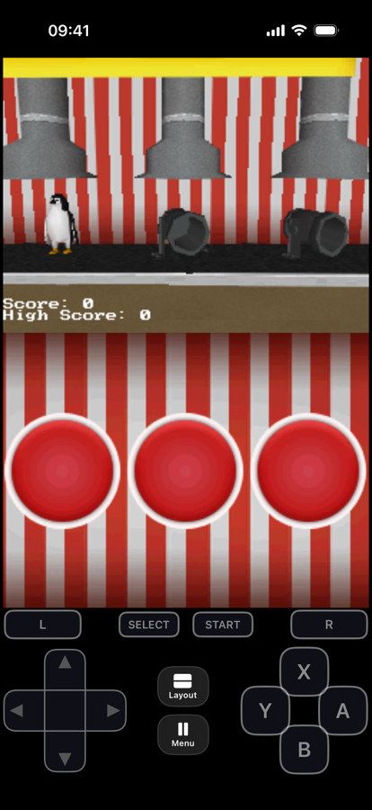
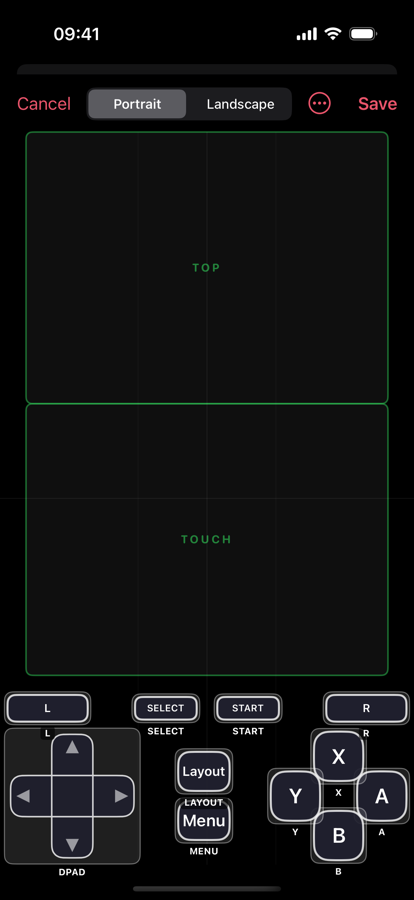
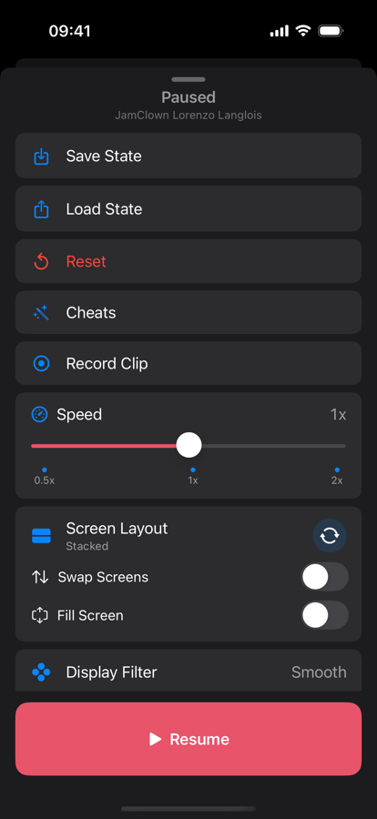

A Nintendo DS emulator for iPhone and iPad — both screens, the real touch screen, and the microphone.
Coming to the App Store · iOS 17 or later



The DS had two screens, a stylus and a microphone. An emulator that ignores any of them is only emulating half the console.
Stack both screens, place them side by side, or focus on just one. Switch at any time, and eNDS remembers your choice per game.
Tap and drag on the bottom screen like a stylus. Menus, minigames and drawing all work the way they did on the console.
Blow into the mic in the games that ask for it. Audio is processed on your device and never leaves it.
Import a game and play. Real BIOS dumps stay optional, for the handful of titles that want them.
Manual slots plus an automatic save while you play and whenever you leave a game. Slot 1 is free — PRO adds three more.
Connect any MFi or Bluetooth gamepad and the buttons map themselves. Physical keyboards work too.
Move, resize and hide every on-screen control, pick your own colours, and set a background photo.
Fully translated into ten languages, not just the menus.
eNDS is built on melonDS and is released under the GNU General Public License v3. The source is public — you can read exactly what it does.
Not a banner, not an interstitial, not a "watch this to continue". None.
No analytics, no advertising SDKs, no accounts. Nothing about you is collected or sent anywhere.
Games and saves live on your device and in your own backups. There is no server for them to go to.
PRO is an auto-renewing subscription, or a one-time lifetime unlock if you prefer. It adds save slots 2–4, the scanlines filter and custom backgrounds — that is the whole list. Emulation, your library, the controller and layout editor, save slot 1, auto-save, cheats and multiplayer are free and stay free.
Worth saying out loud rather than leaving you to work it out: eNDS was built with heavy use of AI coding assistants. A large share of the app's own code was drafted by a model and then read, corrected and tested on real devices before it shipped. The emulation core underneath is melonDS — written by people, unmodified, and no AI went near it. All of it is in the repository if you would rather check than take our word for it.
eNDS does not include, provide or link to any games, BIOS files or copyrighted Nintendo material, and it never will. It plays files you supply yourself, from cartridges you own. Please keep it that way — it is what lets an emulator like this exist at all.
One person builds eNDS. Bug reports, a game that misbehaves, or just a note that it worked — all of it is read.
For a bug, it helps enormously to say which device and iOS version you are on, and which game.